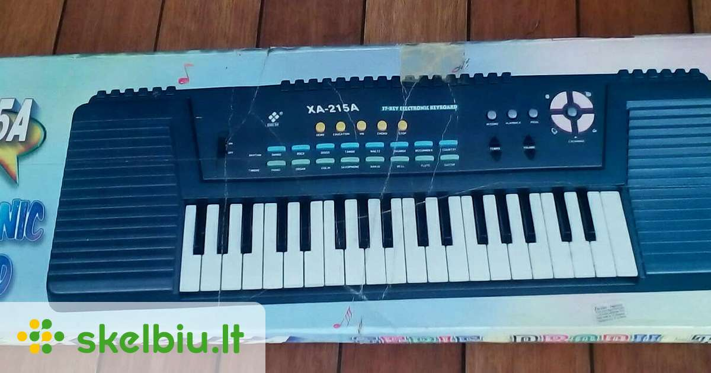

Welcome to sintezatorius
Sintezatoriai su autoakompanimentu
2020.10.30 03:32
Krepšelis
Krepšelis tuščias Rodyti krepšelį
(0.00 Lt.) +370 694 64178 Naujos prekės KOLONĖLIŲ NUOMA Kaip išsirinkti gitarą? Prekės (mob. versija) Į Pradžią KONTAKTAI
Gitaros
Mušamieji
Styginiai instrumentai bei priedai
Pučiamieji
Klavišiniai instrumentai bei priedai
Priedai gitaroms
Audio technika
Instrumentai vaikams
Pagrindinis Klavišiniai Klavišiniai instrumentai Sintezatoriai su autoakompanimentu Rūšiuoti pagal Prekės kaina -/+ Gamintojas: Pasirinkite gamintoją Casio Korg Yamaha Rezultatai 1 - 20 iš 2420 40 80 200
Sintezatoriai su autoakompanimentu
Maitinimo adapteris AD-E95100 Casio sintezatoriams
Maitinimo adapteris AD-E95100 Casio...
Prekės informacija 13,00 € (44.89 Lt. )Vaikiškas elektrinis pianinas-sintezatorius Casio SA-46
Vaikiškas elektrinis...
Prekės informacija 47,00 € (162.28 Lt. )Vaikiškas elektrinis pianinas-sintezatorius Casio SA-47
Vaikiškas elektrinis...
Prekės informacija 49,00 € (169.19 Lt. )Vaikiškas elektrinis pianinas-sintezatorius Casio SA-78
Vaikiškas pianinas/sintezatorius Casio...
Prekės informacija 69,00 € (238.24 Lt. )Vaikiškas elektrinis pianinas-sintezatorius Casio SA-77
Vaikiškas pianinas/sintezatorius Casio...
Prekės informacija 69,00 € (238.24 Lt. )Vaikiškas elektrinis pianinas-sintezatorius Casio SA-76
Vaikiškas pianinas/sintezatorius Casio...
Prekės informacija Norėdami užsakyti praneškite mums 69,00 € (238.24 Lt. )Sintezatorius Casio CTK-240H7
Sintezatorius su autoakompanimentu...
Prekės informacija Norėdami užsakyti praneškite mums 94,00 € (324.56 Lt. )Sintezatorius su akompanimentu Casio CT-S200RDC7
Sintezatorius su akompanimentu Casio...
Prekės informacija 138,00 € (476.49 Lt. )Sintezatorius su akompanimentu Casio CT-S200WE
Sintezatorius su akompanimentu Casio...
Prekės informacija 139,00 € (479.94 Lt. )Sintezatorius su akompanimentu Casio CT-S200BK
Sintezatorius su akompanimentu Casio...
Prekės informacija 139,00 € (479.94 Lt. )Sintezatorius Yamaha PSR E263
Sintezatorius su autoakompanimentu...
Prekės informacija Norėdami užsakyti praneškite mums 145,00 € 150,00 € (517.92 Lt. )Sintezatorius Yamaha PSR E273
Sintezatorius su autoakompanimentu...
Prekės informacija 179,00 € (618.05 Lt. )Sintezatorius Yamaha PSR E363
Versatile functions and an expressive...
Prekės informacija 209,00 € (721.64 Lt. )Gitaros formos sintezatorius Yamaha SHS-500B
Gitaros formos sintezatorius Yamaha...
Prekės informacija 259,00 € (894.28 Lt. )Sintezatorius Yamaha PSR EW300
Sintezatorius su akompanimentu Yamaha...
Prekės informacija Norėdami užsakyti praneškite mums 259,00 € 261,00 € (901.18 Lt. )Sintezatorius su akompanimentu Casio LK-S250 (šviečiantys klavišai)
Sintezatorius su akompanimentu ir...
Prekės informacija Norėdami užsakyti praneškite mums 269,00 € (928.80 Lt. )Sintezatorius Yamaha PSR E463
Sintezatorius Yamaha PSR E463.
Prekės informacija 295,00 € (1,018.58 Lt. )Sintezatorius Korg EK-50
Sintezatorius Korg EK-50.
Prekės informacija Norėdami užsakyti praneškite mums 315,00 € (1,087.63 Lt. )Sintezatorius Yamaha PSR EW410
Sintezatorius Yamaha PSR EW410.
Prekės informacija Norėdami užsakyti praneškite mums 399,00 € (1,377.67 Lt. )Sintezatorius Korg EK-50 L
Sintezatorius Korg EK-50 L.
Prekės informacija 555,00 € (1,916.30 Lt. ) Pirmas Ankstesnis 1 2 Kitas Paskutinis Puslapis 1 iš 2 Apie mus Kodėl verta rinktis Grojam ? Kontaktai Kur mokytis groti ?
STRAIPSNIAI
Kaip išsirinkti gitarą?
Pirmoji gitara: akustinė ar klasikinė?
Kaip suderinti gitarą?
Gitarų dydžiai
PAGALBA
PRISTATYMAS
Pinigų grąžinimo garantija
Kaip išsirinkti ir nusipirkti gitarą ?
Instrumentų priežiūra
Klientų atsiliepimai
PREKĖS
Gitaros
Mušamieji
Styginiai
Nešiojamos aktyvios kolonėlės
Klavišiniai
Priedai
Audio technika
Instrumentai vaikams
Turite klausimų? Norite užsakyti? Informacija teikiama ir užsakymai priimami telefonu +37069464178 ir el. paštu info@grojam.lt © 2013-2020 Grojam.lt
